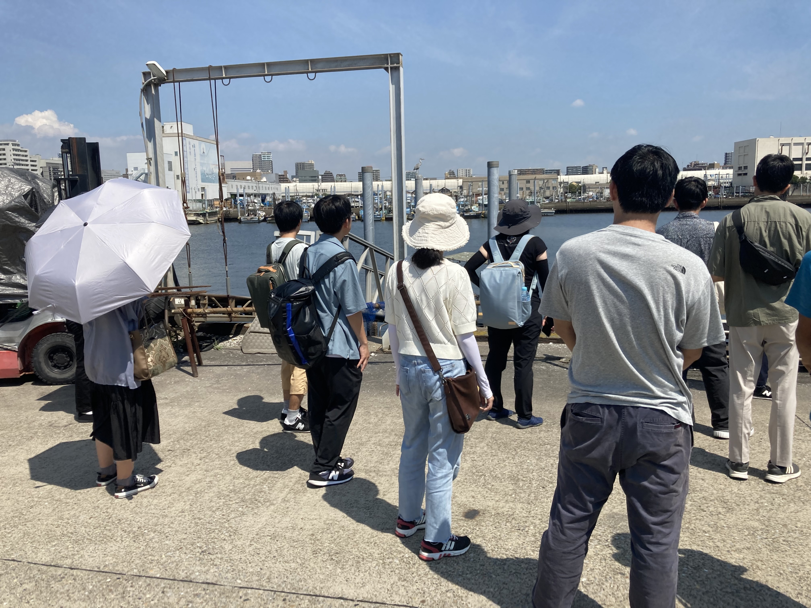

FEATURES
特集
船橋漁港巡検を実施しました
2023/08/29
2023年8月29日、船橋市農水産課の方々にご協力いただき、船橋漁港巡検を実施しました。
巡検の様子
まず、農水産課の担当者様に船橋漁港を案内していただき、船橋で行われている漁業の様子を見学させていただきました。その後、船橋の水産業についてのご講演をいただき、船橋の新名産品であるホンビノス貝のブランド利用が進む一方で、青潮などの課題に悩まされているという現状も学べました。そのなかで、未利用魚を活用した商品開発やカキの養殖など、船橋の水産業の将来へ向けた新たな試みについても教えていただき、非常に学びの多い巡検となりました。
船橋市農水産課の皆様、貴重な機会をありがとうございました。